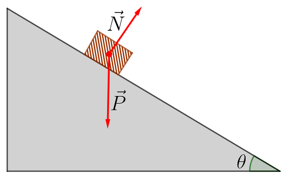
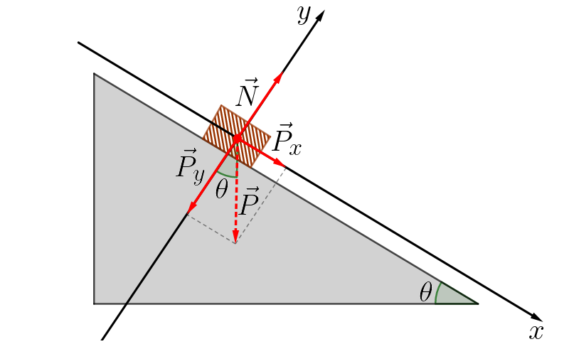
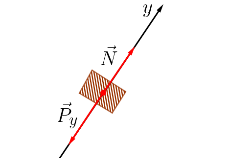
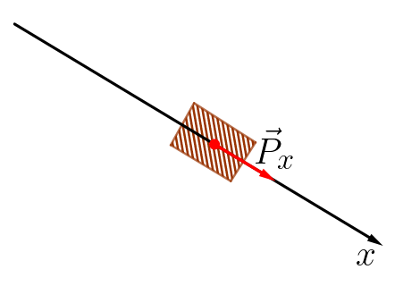

Aula2-15: Plano inclinado sem atrito
O plano inclinado é um sistema mecânico que se compõe de um corpo que é colocado sobre uma superfície não paralela à superfície terrestre. Essa obliquidade da superfície com respeito à Terra faz com que o peso e a normal não se equilibrem, gerando, então, na ausência de forças de atrito e outras forças externas, sempre uma força resultante.
Planos inclinados muito representam para a física experimental, uma vez que foi deste engenho que se serviu Galileu para elaborar suas terias acerca do movimento dos corpos (veremos isto mais adiante). Além disto, planos inclinados são costumeiramente usados por todos nós sem nos darmos conta. Às vezes, ao precisarmos escalar um degrau demasiado alto, optamos por substituí-lo por uma rampa mais ou menos íngrime, um plano inclinado, e isto se justifica, pois a rampa permite que nós direcionemos nossos esforços de sorte a torná-los mais cômodos.
Como resolver problemas de plano inclinado
I. Faça um desenho do problema representando todas as forças atuantes no corpo estudado.

II. Adote como referencial um plano cartesiano de eixos direcionados da maneira que melhor convir ao estudo do problema. Neste caso analisado, o mais conveniente é aquele cujo eixo das abcissas é paralelo ao plano. Observe que, neste caso, o ângulo de inclinação do eixo com respeito ao solo pode ser transposto para a região demarcada.
III. Decomponha as forças que não se encontram sobre os eixos de seu referêncial. Neste nosso exemplo, precisamos decompor apenas a força peso.

IV. Com todas as componentes de forças dispostas sobre os eixos de nosso referencial, analise o problema em um eixo de cada vez, aplicando as leis de Newton para dinâmica.
EIXO Y

Como a força normal é igual em módulo e de sentido oposto a força peso no eixo y, a força resultante será nula e, consequentemente, a aceleração também será nula.
EIXO X

Como existe apenas uma força atuante no eixo x, a força peso neste eixo, tal força será igual a força resultante. Neste caso teremos aceleração diferente de 0.
Os planos inclinados de Galileu
Galileu viveu numa época em que os instrumentos de medição de tempo eram precários, bastante imprecisos; deste modo, analisar o movimento de objetos em queda na atmosfera era tarefa árdua.
Para contornar este obstáculo, ele concebeu a ideia de pôr esferas para deslizarem em planos inclinados e, assim, estudá-los detidamente e com maior precisão.

O plano de Galileu dispunha de sinos móveis, para que a esfera, ao passar por eles, fizesse-os tilintar.

Primeiro Galileu dispõs os sinos igualmente espaçados uns dos outros. Assim ele percebeu que o intervalo entre os sinais sonoros diminuiam progressivamente. De seguida, resolveu ir organizando o espaçamento entre os sinos até que eles soassem em intervalos regulares de tempo. De último, mediu o espaçamento entre os sinos e percebeu que o espaço percorrido dependia do quadrado do tempo.
Galileu também pôde estender esta observação a queda dos corpos na atmosfera, pois suas medidas comprovavam que os resultados não dependiam do ângulo de inclinação do plano, logo o mesmo aconteceria para o ângulo reto.